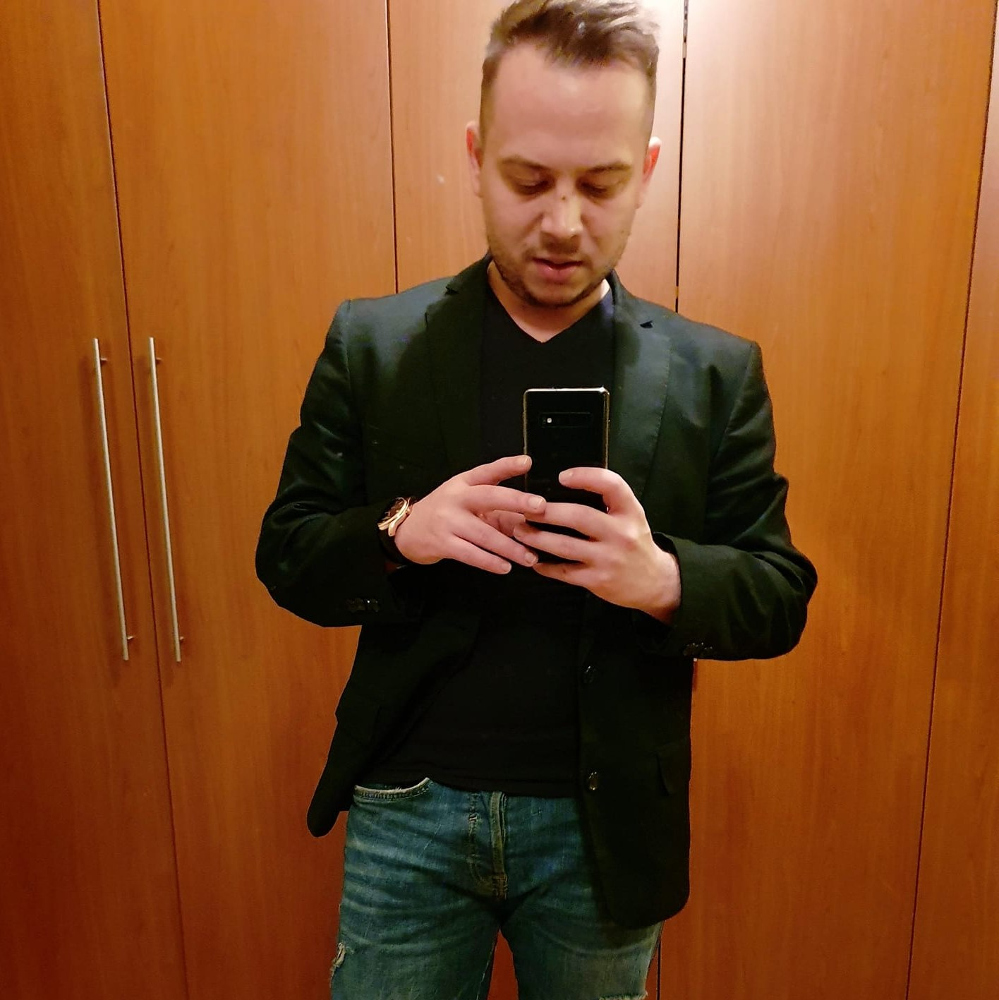

Tudor Iacob

Summary
Here to learn and improve my coding skills. I've started to my programming journey with Python,
now looking to learn Web Developement.
Education
- "Petru Rares" National Collage, Piatra Neamt: 2001-2009
- "Technical University of Civil Engineering Bucharest: 2009 - 2014
Work Experience
Owner at SC Tudor Furniture Designs from 2014-present. I've started my own furnniture production
and Interior Design company in 2014.
Skills
During the time I've had opened my own firm I've developed a wide range of skills. To enumerate some of them:
- Leadership skills
- Working with teams
- Coordonating skills
- Programming skills
- Proficient in English
- Proficient in Spanish
- Begginer in French
Awards
- Numerous Karate Awards on a National Level
- ECDL Certificate
- Interior Design Certificare
- Computer Using Certificate
Contact
Hobbies